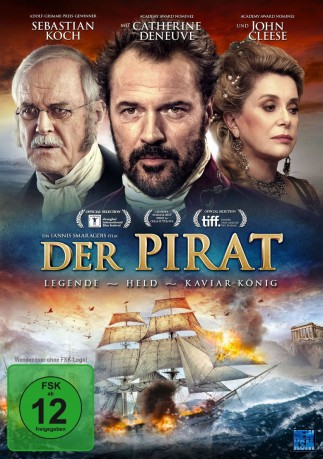
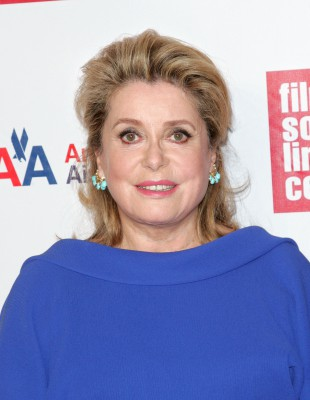

#5232 Der Pirat - Legende: Held - Kaviar-König
 
 IMDB-Wertung: 6.0 / 10
IMDB-Wertung: 6.0 / 10  Metascore: 0
Metascore: 0 
Im 18. Jahrhundert macht der Grieche Ioannis Varvakis als Seeräuber das Mittelmeer unsicher und hat es dabei vor allem auf die Flotte der osmanischen Unterdrücker abgesehen. Als die Katharina die Große die baltische Flotte gegen die Türken schickt, schließt sich Varvakis dem Unternehmen an und wird darüber in den russischen Adelsstand erhoben. Nebenbei macht ihn eine neue Transportmethode für Kaviar zum reichen Mann. Einiges von diesem Geld fließt geradewegs in die Finanzierung der griechischen Revolution.
Jahr: 2012
Dauer: 101 Minuten
FSK: 12
Land: Griechenland Studio: New KSMTonspuren: DTS - ,
Untertitel: Deutsch,
Auflösung: 1080p (1920x1040) Größe: 9328 MB
Genre: Abenteuer, Geschichte, Biographie
Regisseur: Yannis Smaragdis
Drehbuch: Arthur Alsberg
Soundtrack:
Darsteller:
 Sebastian Koch als Varvakis
Sebastian Koch als Varvakis- Juan Diego Botto als Lefentarios
- Olga Sutulova als Helena
 John Cleese als McCormick
John Cleese als McCormick-  Catherine Deneuve als Empress Catherine II of Russia
- Fotini Baxevani als
- Christopher Papakaliatis als Ekaterini the Great's counselor
- Kostas Sommer als
- Evgeniy Stychkin als Ivan
- Akis Sakellariou als Kimon
- Alexandra Sakelaropoulou als Varvakis' Mother
- Lakis Lazopoulos als Fisherman of God
- Pavlos Kontoyannidis als
- Alexandros Mylonas als Temporary Prime Minister
- Giannis Vouros als Businessman A
- Alexis Antonopoulos als Young Man
- George Charalambidis als
- Dimitris Kallivokas als
- Stavros Kanellidis als Turkish pirate
- Elias J. Kay als Bystander
- Giorgos Kotanidis als General Kolokotronis
- Lambros Ktenavos als Andreas
- Nikos Mavrakis als Russian Army Officer
- Dinos Psychogios als Aristocrat
- Kris Radanov als Orlov
- Duncan Skinner als Sergeant Major
- Marisha Triantafyllidou als Maria
- Manos Tsagarakis als Cheeky Boy
- Manos Vakousis als Businessman B
- Achilles Vatrikas als Russian Naval Officer
- Sotiris Venetis als
Datei: X:\2012(N-Z)\Pirat - Legende Held - Kaviar-König, Der (2012, FSK12, 1920x1040).mkv seit 03.01.2017
Festplatte: HD 2012(N-Z)-2013(A-H)
 Es gibt insgesamt 138 Filme in der Gruppe '2012(N-Z)'
Es gibt insgesamt 138 Filme in der Gruppe '2012(N-Z)'